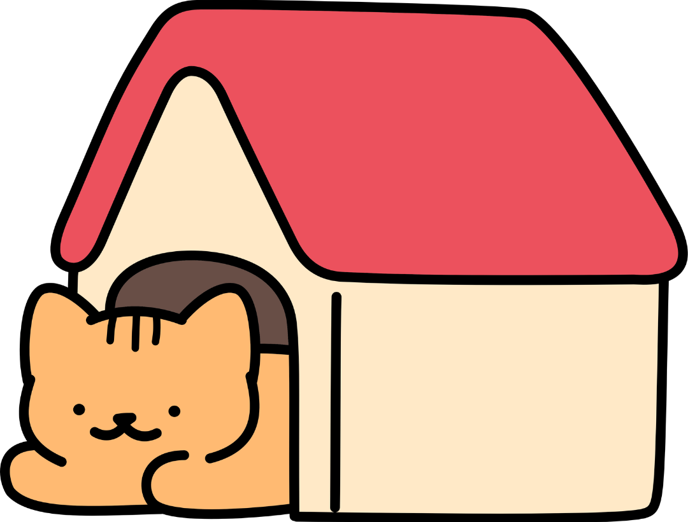

<footer class="main-footer">
    <a href="index.html" class="nav-icon" id="nav-home">
        
    </a>
    
    <a href="#" class="nav-icon" id="nav-center" onclick="window.openFinalChallengeModal(); return false;">
        
    </a>

    <a href="notes.html" class="nav-icon" id="nav-communication">
        
    </a>
</footer>